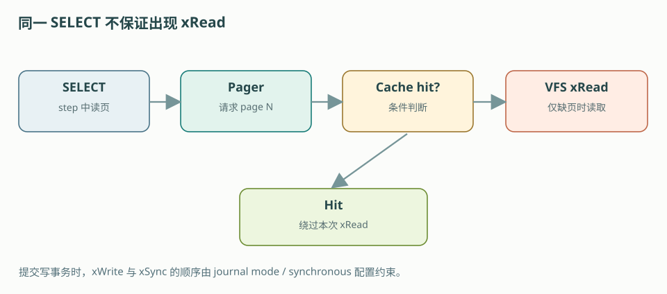
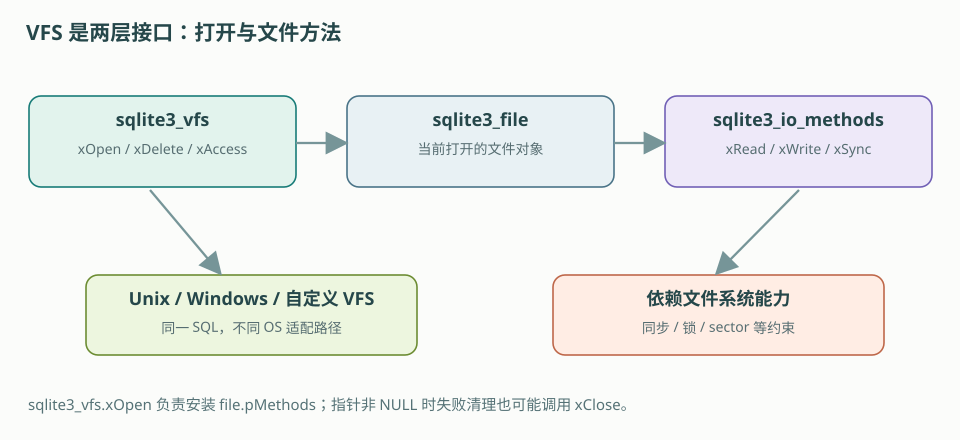
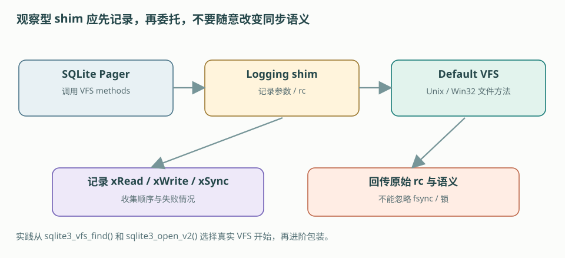

VFS：从 SQLite 文件方法到真实操作系统 I/O
VFS 不只是抽象的“文件系统适配器”，它还承担锁、同步、时间和设备属性的语义。先区分 sqlite3_vfs、sqlite3_file 和 sqlite3_io_methods，才能可靠地观察或定制 I/O。
1. 一次 SELECT 为什么有时完全看不到 read()？
一个 SQL 查询可能读取数据文件，也可能全部命中 SQLite PCache，甚至通过 mmap 的受控路径访问数据。因此“SELECT 一次就必然触发 POSIX read()”不是正确的源码模型。VFS 提供的是SQLite 在需要 OS 服务时使用的抽象，而不是每条 SQL 的逐行 I/O 日志。

官方 VFS 说明还指出，VFS 能用于测试 I/O 故障或建立 shim。要理解它应该从“文件打开时安装的方法表”开始，而不是仅凭目录里的 os_unix.c 函数名猜工作机制。
2. 三个结构体，各自负责什么
sqlite3_vfs 代表平台/自定义文件系统接口；sqlite3_file 代表一个打开的文件对象；sqlite3_io_methods 是这个文件对象的操作方法表。

| 对象 | 核心成员/方法 | 生命周期 |
|---|---|---|
sqlite3_vfs | zName、xOpen、xAccess、xDelete 等 | 可注册并复用 |
sqlite3_file | 指向 sqlite3_io_methods 的 pMethods | 与已打开文件相关联 |
sqlite3_io_methods | xRead、xWrite、xSync、xLock、xUnlock 等 | 方法表由 VFS 实现提供 |
还需注意一个微妙的错误路径：官方 sqlite3_io_methods 文档说明，如果失败的 xOpen 已设置非 NULL 的 pMethods，后续仍可能调用 xClose 清理资源。自定义实现不能把“xOpen 返回错误”当成自动免除清理的许可。
3. 同步与文件锁不是性能开关的小细节
xWrite 尝试写入指定 offset；xSync 的意义是按文件系统承诺推进持久化。SQLite 的事务正确性建立在这些接口按照约定执行之上，不是把一个空函数填给 xSync 就能保持事务安全。设备/文件系统的同步、原子写和扇区属性可能影响崩溃后的结果。
xLock/xUnlock 参与多连接/多进程并发协调。关于 SHARED、RESERVED、PENDING、EXCLUSIVE，传统 rollback 锁模型与 WAL 的读写语义不能简单混同。如果自定义 VFS 不正确实现锁和同步，它可能在单连接测试中“看起来能用”，却在并发或掉电后损坏数据。
不要混淆 VFS 与用户可见的 URI 名称
SQLite 允许注册多个 VFS，然后由 sqlite3_open_v2() 选择 VFS 名称。在 Linux 上，VFS zName 的具体可用选项依构建而异；不要把某一种平台的 unix 名称写成跨操作系统常量。
4. 观测型 VFS shim 为什么比“自己实现文件系统”更安全
若想统计 xRead、xWrite、xSync 调用次数，最稳妥的教育路径是先把现有 VFS 构建成外包裹一层的 shim：记录调用参数、返回码和顺序，然后原样委托给原 VFS，不改变锁状态或同步行为。

真正写一份合格的 shim 并非只重写 xRead：对于 SQLite 的文件和 WAL 机制，可能需要考虑 xFileControl、共享内存相关方法、异常与设备属性。官方 VFS 文档列出多个示例，包括用于注入 I/O 故障的测试 VFS。不要未经验证地给生产环境安装一个玩具 shim。
5. C API 检验：选择当前已注册的 VFS 打开文件
为了不伪造系统调用计数，本章先使用完全公开的 API 实测“可获取默认 VFS、按名字选择并打开数据库”。examples/14_vfs_select.c 通过 sqlite3_vfs_find(NULL) 找默认 VFS，随后把其 zName 传给 sqlite3_open_v2()。
cc -std=c11 -Wall -Wextra -Werror -O2 \
examples/14_vfs_select.c -lsqlite3 -o /tmp/14-vfs
/tmp/14-vfs /tmp/sqlite-14-vfs-demo.sqlite
# 程序打印所用 VFS 名称并对文件数据库执行 CREATE / INSERT / SELECT这里故意不用 :memory: 来冒充文件 I/O：内存数据库通常不会经过真实的数据库文件读写路径，无法展示 xRead。测试结束由程序删除它自己创建的临时文件。若要下探到 syscall 级别，可以使用 Linux strace 或受控 shim，但需要区分 SQLite 自身缓存与 OS cache。
源码追踪路径
从 sqlite3_vfs_find() 到 sqlite3_open_v2()，在平台文件实现中继续观察 os_unix.c 或 os_win.c；在当前文件中核对 sqlite3_io_methods 的 xRead/xWrite/xSync。由于 VFS 是可替换接口，不应将“Linux 上的一个调用栈”推广到 Windows 或自定义 VFS。
6. 定制 I/O 之前的协议审查
你至少应回答这些问题
xOpen设置了 pMethods 之后失败，谁负责 xClose？- 如果把
xSync改为空操作，哪些崩溃保证不再成立？ - 为什么基于
:memory:的 SQL 演示不能证明文件 VFS 有效？ - 如果两个进程都访问同一文件，缺失锁实现会有什么后果？
自测：sqlite3_vfs 与 sqlite3_io_methods 有何区别？
前者是全局/平台注册的虚拟文件系统入口，可打开文件和提供平台服务；后者绑定具体已打开的 sqlite3_file，用于文件的读写、同步和锁操作。
下一章将这些操作接成一个可理解的崩溃恢复协议，解释为什么写入顺序决定了原子提交是否可靠。
官方原始资料与版本边界
本章示意图解释状态与接口责任，不承诺内部实现始终遵循所画箭头或所有平台共享相同锁/同步操作。调试时应把所读源版本、VFS 和 journal mode 一并记录。
- SQLite VFS Documentation · SQLite 官方资料
- sqlite3_vfs Interface · SQLite 官方资料
- sqlite3_io_methods · SQLite 官方资料
- sqlite3_vfs_find / register · SQLite 官方资料
- Memory-Mapped I/O · SQLite 官方资料